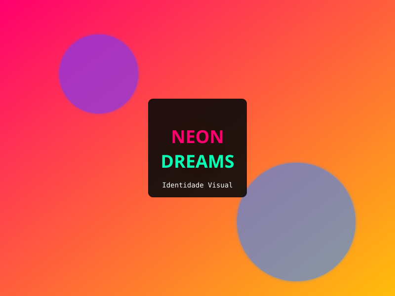
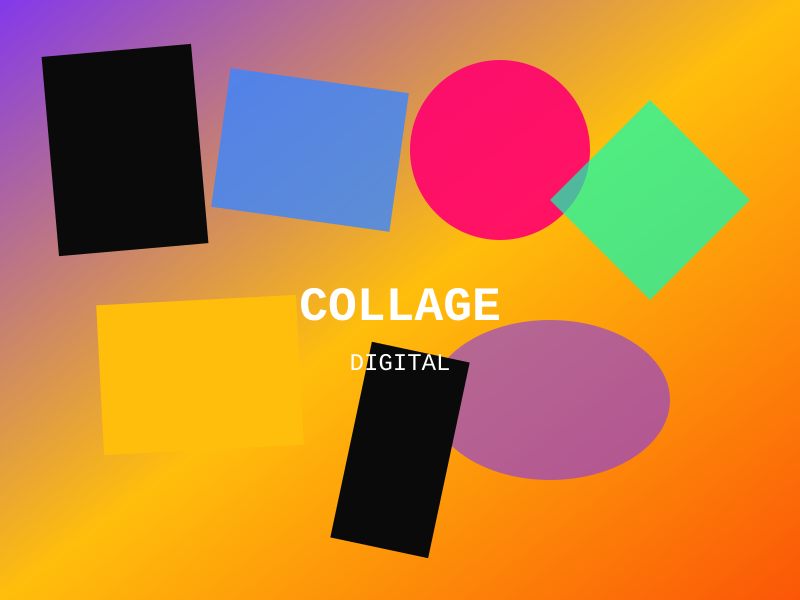
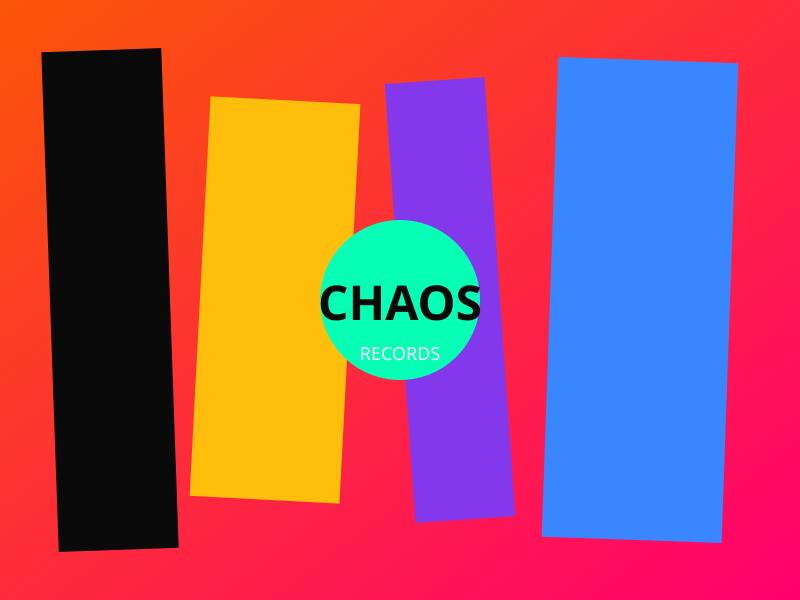
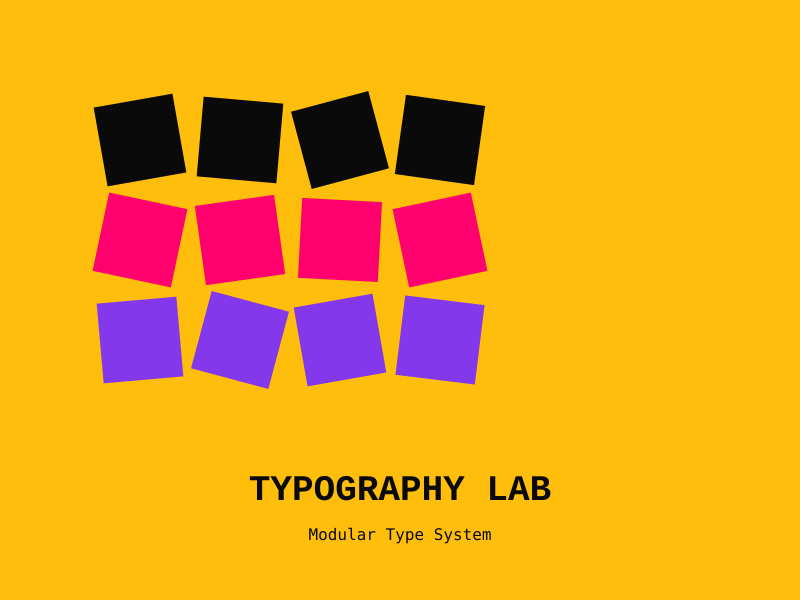

Hackathon End-to-End
Software Developer
Deploy multi-cloud garantindo escalabilidade. APIs RESTful conectando serviços internos e terceiros.
Data Engineer | Mathematician (IFSP) | Cloud Architect
Unindo a abstração da Matemática com a engenharia de Banco de Dados. Especialista em transformar fluxos de dados complexos em decisões estratégicas através de pipelines robustos na AWS, GCP e Azure.
aevum — do latim, era. O que permanece depois que o tempo passa.
A ideia é simples: resolver problemas reais com código que funciona.
Sem abstrações desnecessárias, sem teatro de startup.
Construindo soluções de engenharia de dados fundamentadas em rigor matemático e execução impecável.
Se está aqui, é porque eu sentei e escrevi.
Comunicação técnica e humana em múltiplas camadas
Documentação técnica, comunicação com stakeholders internacionais, leitura de papers acadêmicos.
Comunicação profissional, leitura técnica, colaboração com times LATAM.
Conversação diária, leitura básica, interesse contínuo na cultura e tecnologia japonesa.
Fundamentos do idioma, caracteres básicos, expanding global mindset.
Pipelines, análises e arquitetura de dados

Software Developer
Deploy multi-cloud garantindo escalabilidade. APIs RESTful conectando serviços internos e terceiros.

Python • ⭐ 1

Python

Jupyter Notebook

Java
Backend robusto, lógica de negócio complexa e arquitetura de software escalável.

Frontend • Acessibilidade
Se otimizamos pipelines para máquinas, devemos otimizar a ingestão de dados para humanos. Leitura Biônica em PT-BR para aumentar foco e velocidade de leitura.

GitHub Pages
Vamos construir pipelines que permanecem.
Open para oportunidades em Data Engineering e Cloud Architecture.